Overview
////In part 1 I learned how data define Bezier curves and Bezier surfaces, as well as rendering techniques known as interpolation. In part 2 I learned how to deal with a mesh of triangles, including operations like area-weighted vertex normals, flipping, splitting, and loop subdivision for mesh upsampling.
Task 1 Bezier Curves with 1D de Casteljau Subdivision
Briefly explain de Casteljau's algorithm and how you implemented it in order to evaluate Bezier curves
· De Casteljau's algorithm recursively determines a parametrized point based on each line segment in a polygonal chain. Eventually this algorithm will generate a new curve-like polygonal chain of parameterized points. A smaller parameter step will create more parameterized points, and the final curve will become smoother as a result.
Take a look at the provided .bzc files and create your own Bezier curve with 6 control points of your choosing. Use this Bezier curve for your screenshots below
· My own Bezier curve file:
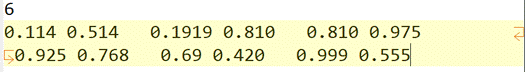
Show screenshots of each step / level of the evaluation from the original control points down to the final evaluated point
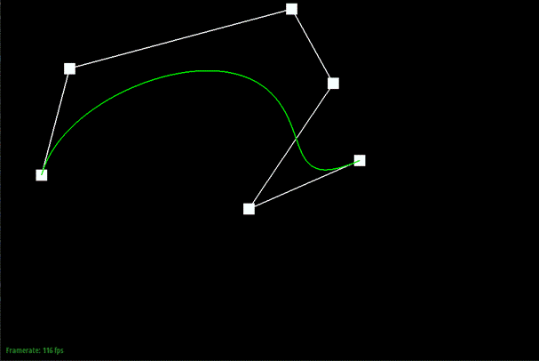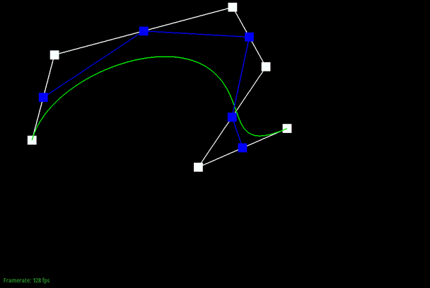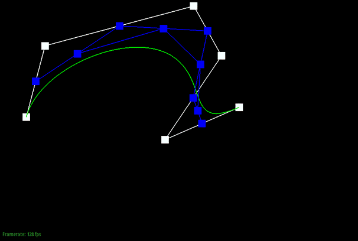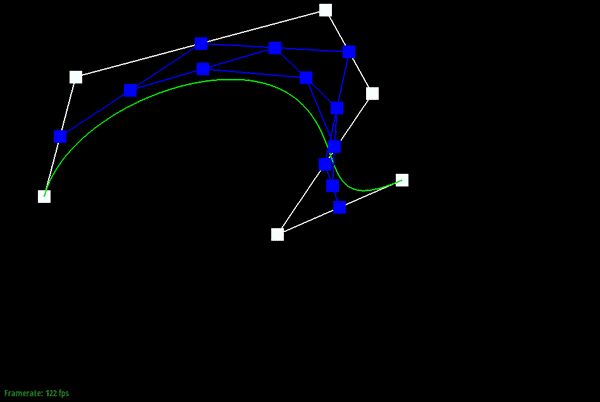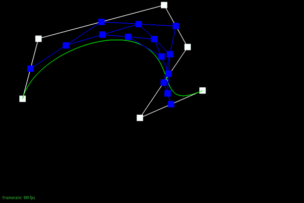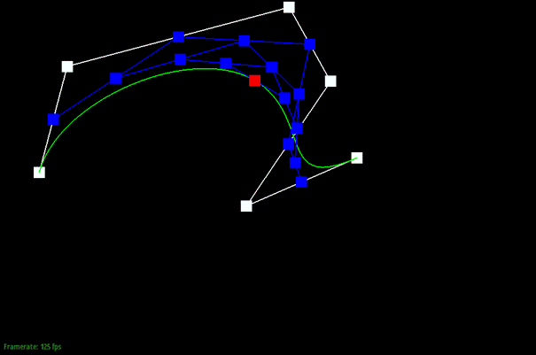
Show a screenshot of a slightly different Bezier curve by moving the original control points around and modifying the parameter t via mouse scrolling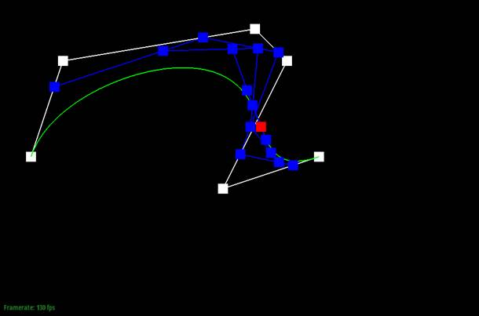
Task 2 Bezier Surfaces with Separable 1D de Casteljau
Briefly explain how de Casteljau algorithm extends to Bezier surfaces and how you implemented it in order to evaluate Bezier surfaces
· For Bezier surfaces, the control points consist of a “2D” vector of Vector3D. What I did is, first reduce the “2D” vector of Vector3D into an “1D” vector of Vector3D by applying de Casteljau's algorithm on every 1D row of the “2D” vector of Vector3D. I stored the results in a vector of Vector3D, which are intermediate control points determined by the first pass of de Casteljau's algorithm. Then, I run de Casteljau's algorithm on these intermediate control points. The final result will be a single point on the desired Bezier Surface. Repeating all of these with a range of parameter pair (u, v), I am able to draw a Bezier Surface using de Casteljau's algorithm. The #91 slide of lecture 7 is a great illustration of this algorithm, and it helps a lot during implementation.
Show a screenshot of bez/teapot.bez (not .dae) evaluated by your implementation.
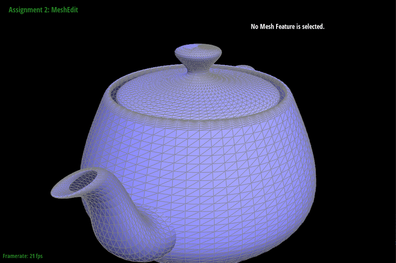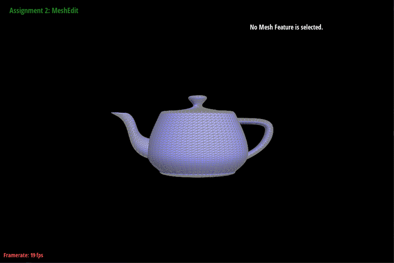
Task 3 Area-Weighted Vertex Normals
Briefly explain how you implemented the area-weighted vertex normals.
· To implement the area-weighted vertex normals, I traversed the half edges that go towards the given vertex (fetch next()->twin()). For, I find the normal vectors of faces bounded by every half edge I traversed. Then, I summed up those normal vectors (no need to normalize because the vector from Face.normal() is already scaled based on the triangle’s area) to make sure they are area-weighted. Finally, I normalize the sum at the very end so that the average output of the function is still a unit vector.
· One thing once really confused me: Face.normal() returns a normal vector which is right to the surface of the Face. This vector is not necessarily a unit vector.
Show screenshots of dae/teapot.dae (not .bez) comparing teapot shading with and without vertex normals. Use Q to toggle default flat shading and Phong shading.
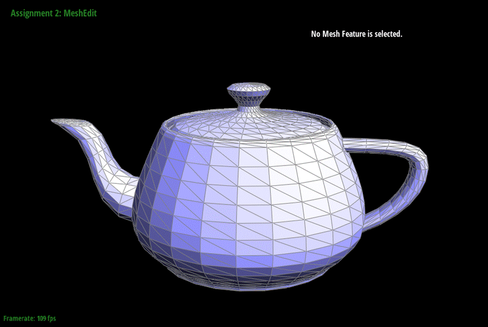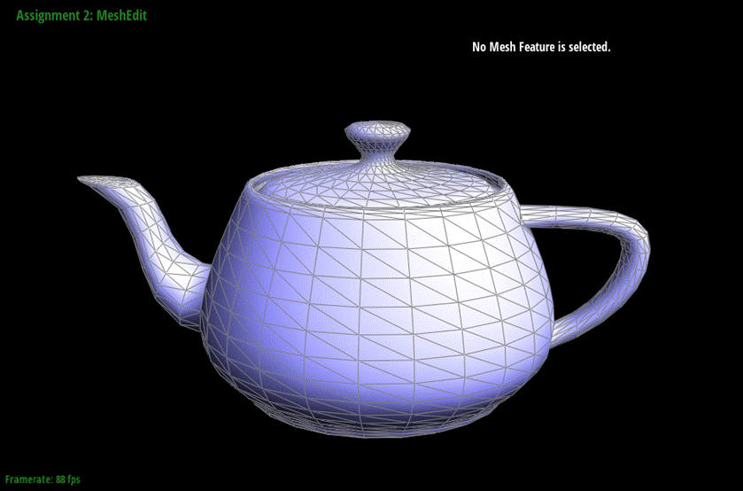
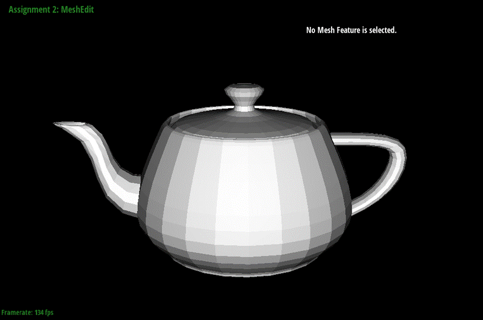 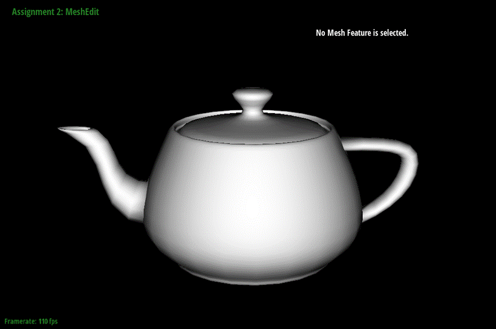
Task 4 Edge Flip
Briefly explain how you implemented the edge flip operation and describe any interesting implementation / debugging tricks you have used.
A\ |
| \ |
| \ V
3<----------2
· Here I use A for up arrow and V for down arrow. 0, 1, 2, 3 are four vertices involved. I only need half edges 01, 12, 23, 30, because other half edges such as 10, 21, 32, 03 do not belong to faces involved, which are face_012 and face_023. The diagonal line is two half edges to be flipped. I want them connecting vertices 1 and 3 after the operation.
· I used setNeighbors() to change half edge 02’s next half edge from 23 to 12.
· I changed half edge 02’s next half edge from 23 to 12. I changed its starting vertex from 0 to 3. Thus, face_023 does not make sense now and should be called “face_123”, later I changed its half edge to edge 31 (used to be 02, the half edge we just flipped), just to be safe.
· For the twin half edge of 02, I changed half edge 20’s next half edge from 01 to 30. I changed its starting vertex from 2 to 1. Thus, face_012 does not make sense now and should be called “face_013”, later I changed its half edge to edge 13 (used to be 20, the half edge we just flipped), just to be safe.
· Finally, I modified the half edge pointer of each one of the vertices 0, 1, 2, 3, as well as the faces, to make sure they are consistent with the new structure of data:
0---------->1
A / |
| / |
| / V
3<----------2
· No edges are modified during the whole process.
Show screenshots of the teapot before and after some edge flips.
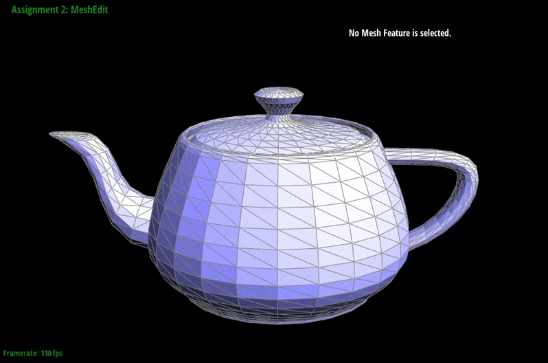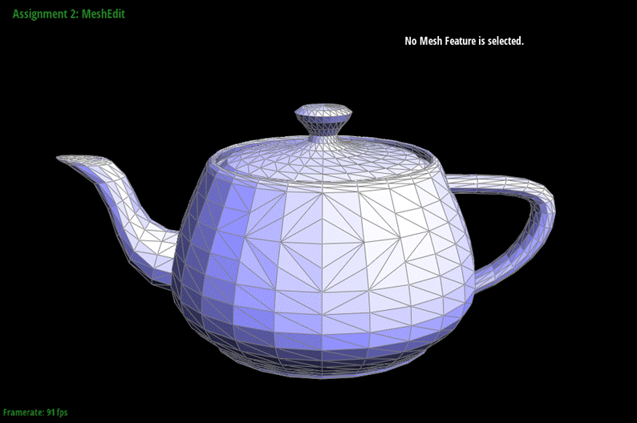
Task 5 Edge Split
Briefly explain how you implemented the edge split operation and describe any interesting implementation / debugging tricks you have used.
· The initialization is quite similar to task4 - I started with declaring some temporary pointers in order to modify data structs involved in edge split operation. Likewise, I fetched 4 vertices, 6 half edges, and 2 faces. However, for this task I need to create something new: 1 new vertex, 6 new half edges, 3 new edges, 2 new faces. I use this text diagram to show what is needed in this operation.
0---------->1
A\ |
| \ |
| \ V
3<----------2
· The mesh structure after the split should look like this:
0---------->1
A\ / |
| 4 |
| / \ V
3<----------2
where every single triangle is clockwise.
· Here is the detailed list of steps:
o 1. For each half edge in the diagram (12 half edges in total: 01, 12, 23, 30, 04, 40, 14, 41, 24, 42, 34, 43), I used setNeighbors() to redirect the pointers to correct objects. For example, half edge 40 should have [next=01, twin=04, vertex=4, edge=04, face=014]. Since half edge 40 was 20 before the split, I should not create a new edge/face for it.
o 2. For other simpler objects (5 vertices, 4 edges, 4 faces, 13 in total), simply correct their halfedge()field. For example, the new vertex #4 should have its halfedge() pointer pointing to one of [40, 41, 42, 43].
Show screenshots of a mesh before and after some edge splits.
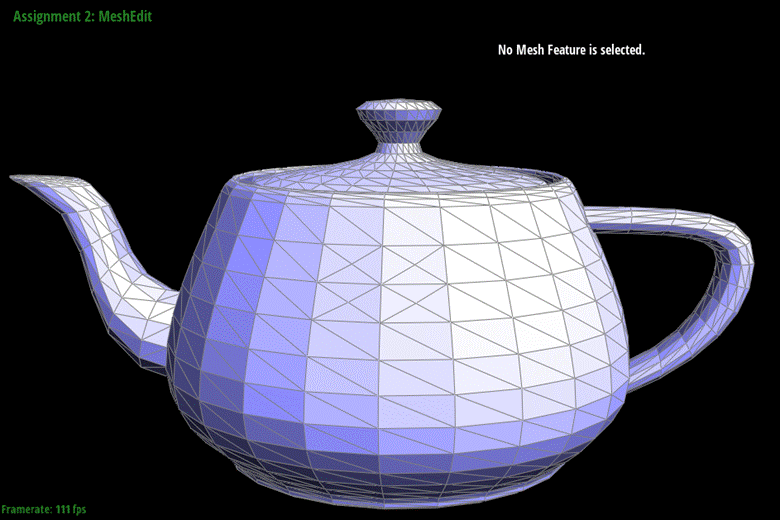
Show screenshots of a mesh before and after a combination of both edge splits and edge flips.
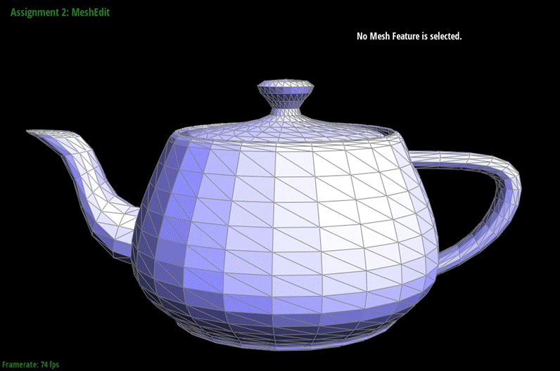
Write about your eventful debugging journey, if you have experienced one.
· When I initialized the new vertex, I forgot to specify its position. As a result, the split operation generates holes on the surface of the teapot. Even worse, the edge been split “goes into” the center of the teapot. I guess it’s because the new vertex just been created is in default at the center of the teapot.
Task 6 Loop Subdivision for Mesh Upsampling
Briefly explain how you implemented the loop subdivision and describe any interesting implementation / debugging tricks you have used.
I take the hint from the skeleton code:
1. I used loop subdivision rule to get new positions for old vertices and stored them in Vertex:newPosition. Then I calculated the positions of new vertices created by split, storing in Edge:newPosition.
2. I traversed all edges and split them into two edges. I used Edge:isNew to avoid infinite loop. Then I check each edge to see if they need a flip – such edges are freshly created (not on an old edge) and connect an old vertex and a new vertex. I also introduced a new instance variable Edge:isOnOriginalEdge in order to skip original edges that should never be flipped.
3. Finally, I updated the positions of all edges and vertices. I also didn’t forget to assign all vertices and edges’ isNew field to be false. All edges’ Edge:isOnOriginalEdge should become true now.
Some interesting bugs I encountered before I introduced Edge:isOnOriginalEdge:
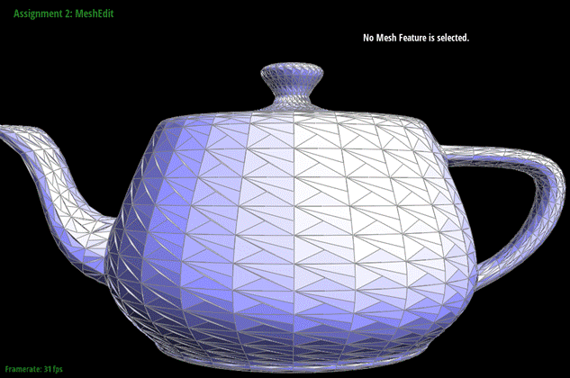 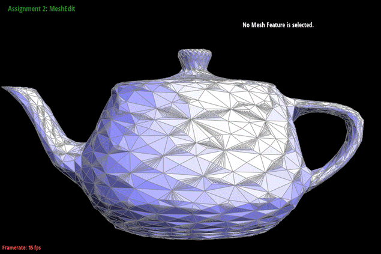
After dedicated debugging:
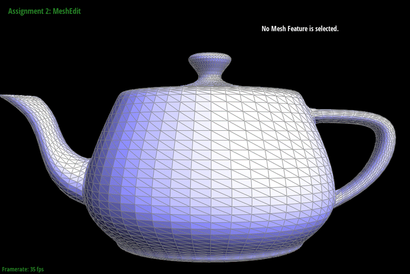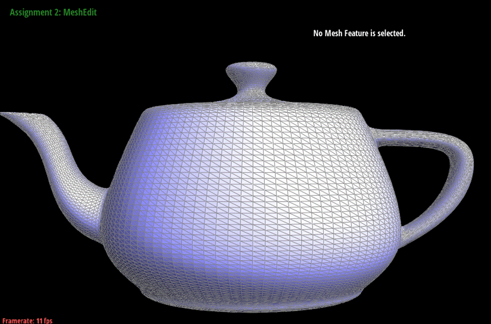
What happens to sharp corners and edges? Can you reduce this effect by pre-splitting some edges?
The sharp corners and edges (like, the spout) are not sufficiently smooth compared to other parts of the teapot. Pre-splitting could help reduce this effect.
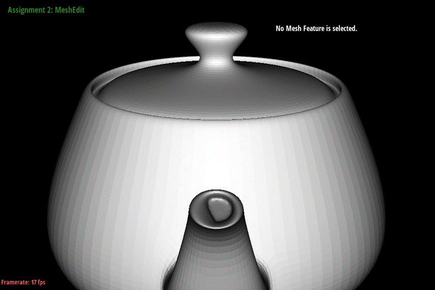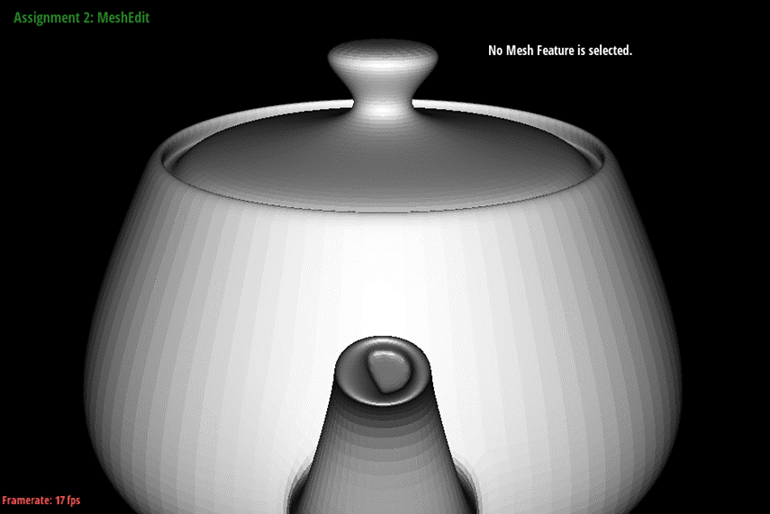
Load dae/cube.dae. Perform several iterations of loop subdivision on the cube. Notice that the cube becomes slightly asymmetric after repeated subdivisions. Can you pre-process the cube with edge flips and splits so that the cube subdivides symmetrically? Document these effects and explain why they occur. Also explain how your pre-processing helps alleviate the effects.
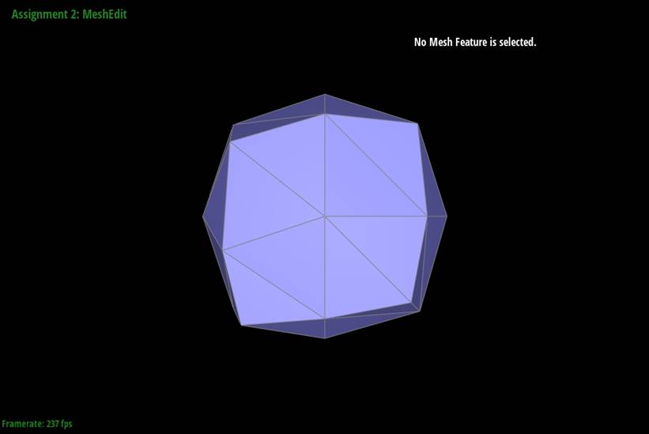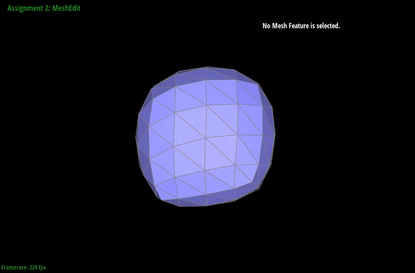 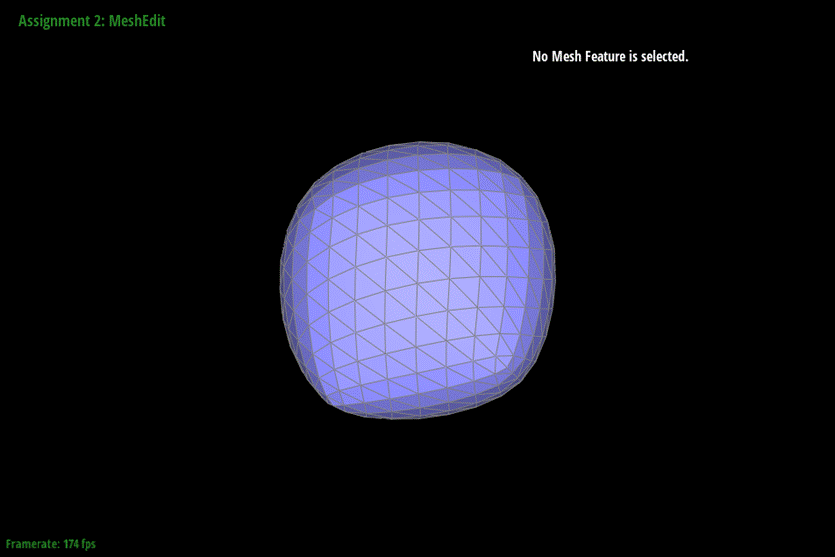